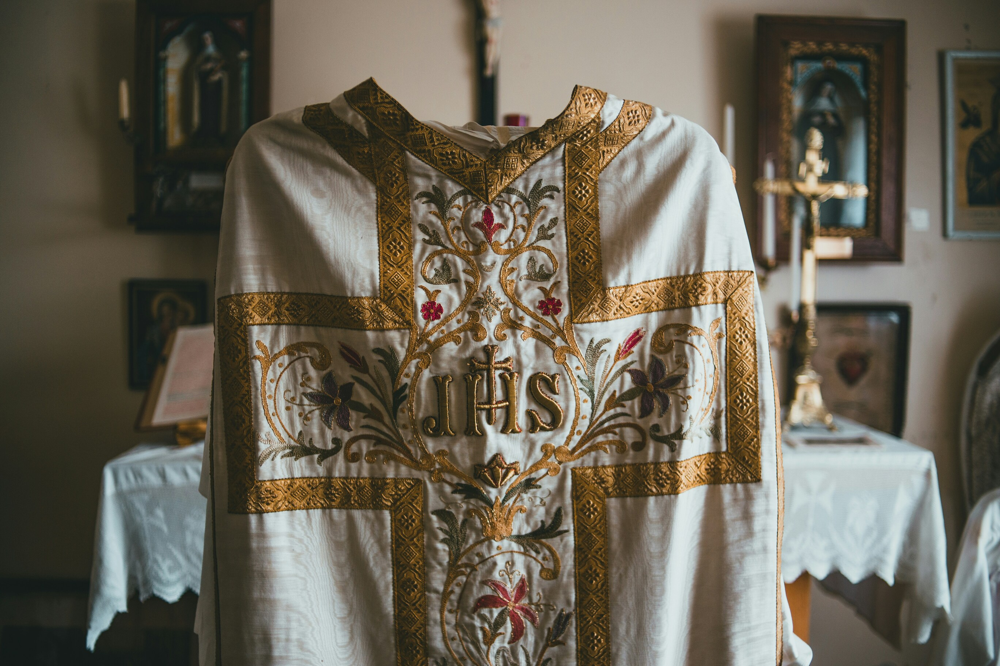

Sala dei paramenti sacri
La Sala dei Paramenti Sacri ospita una delle più importanti collezioni di tessuti liturgici della Sicilia. Pianete, piviali, dalmatiche e paliotti raccontano cinque secoli di tradizione artistica, dalla sobria eleganza rinascimentale all'esuberanza decorativa del barocco. Particolarmente pregevoli sono i paramenti realizzati con la tecnica del 'ricamo a rilievo', una specialità delle monache benedettine di Noto
Opere in evidenza
- Pianeta del vescovo Ferrara
- Piviale in broccato d'oro
- Collezione di palliotti ricamati